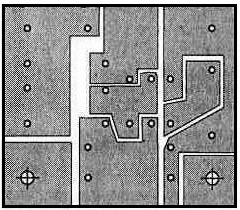
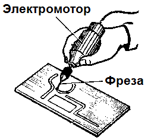
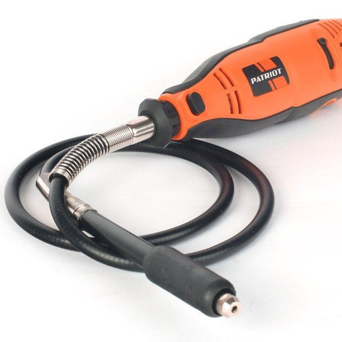
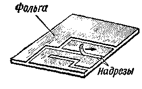
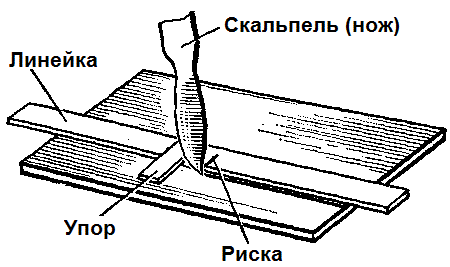
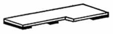
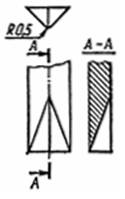

Технология изготовления печатных плат механическим способом
При механическом способе изготовления печатных плат фольга между проводниками удаляется ножом, резаком, скальпелем или фрезой. Этот способ самый простой, но требует больше физических сил и определенных навыков.

Рис. 1 - Внешний вид платы при механическом способе изготовления
Механический способ изготовления печатных плат применяют, когда топология печатной платы очень простая, а хлорного железа нет под руками.
Изготовление печатных плат механическим способом производится в следующей последовательности:
- Подготовка фольгированного стеклотекстолита (смотреть здесь).
- Нанесение рисунка печатных проводников.
- Удаление фольги.
- Сверление отверстий (смотреть здесь).
- Лужение (смотреть здесь).
Нанесение рисунка печатных проводников
При механическом способе на фольгированную сторону платы наносятся линии по которым удаляется фольга. Таким образом разделяются печатные проводники. На рисунке 1 эти линии показаны белым цветом. Вычерчивание производится простым карандашом, фломастером или маркером. Лучше всего подойдут фломастеры с тонким наконечником.
Удаление фольги
Имеются следующие приемы удаления фольги при изготовлении печатных плат механическим способом:
- фрезерование,
- вырезание ножом;
- соскабливание резаком.
Фрезерование
Для фрезерования на вал небольшого электродвигателя нужно насадить переходную втулку и закрепить в ней короткое сверло диаметром 1...3 мм. Сверло затачивают как фрезу. Затем включают электродвигатель и, держа его в руке, фрезеруют фольгу по линиям до подложки (рис. 2).

Рис. 2 - Изготовление печатной платы методом фрезерования
Фрезерование значительно упрощается, если использовать электрический гравер, вращение в котором передается на фрезу через гибкий вал.

Рис. 3 - Электрический гравер с гибким валом
Вырезания ножом
Самый простой прием изготовления печатного монтажа, он не требует почти никакой оснастки.
В данном способе по нанесенным линиям острым ножом по линейке прорезают фольгу. Затем край фольги ножом отделяют от подложки и отрывают вдоль разрезов, сделанных на пробельных участках (рис. 4).

Рис. 4 - Изготовление печатной платы путем срезания и отслаивания фольги
При прорезании фольги нож иногда срывается и прорезает схему. Чтобы избежать этого, на линейку устанавливают металлический ограничитель (рис. 5). На линейке ставят черточку, показывающую, до какого места доходит режущий конец ножа, когда последний упирается в ограничитель. Линейку кладут таким образом, чтобы риска показывала конец разреза, который делается в фольге.

Рис. 5 - Линейка с упором для надрезания фольги
Удобно линейку изготовить из прозрачного материала и приклеить в нескольких местах слой упругой резины (рис. 6), что улучшает фиксацию линейки на заготовке во время прорезания бороздок. При этом выступ линейки совмещают с концом бороздки, чтобы предотвратить ошибочное прорезание.

Рис. 6 - Линейка с ограничительным выступом
Соскабливание резаком
Для соскабливания фольги применяется резак изготовленный из полотна ножовки по металлу (рис. 7).
Прорезать криволинейные дорожки удобно с помощью резца, выполненного из трехгранного надфиля. На точиле рабочую часть надфиля укорачивают на 20...30 мм и стачивают насечку на 20—25 мм от конца. Эту обточенную часть надфиля-заготовки отпускают.
После отпуска заготовку зажимают в тиски и обрабатывают ее конец. Нижнюю грань скругляют: эта часть резца будет рабочей (рис. 8). Конец заготовки закаливают, нагрев его до ярко-оранжевого цвета и быстро опустив в машинное масло. На хвостовик надфиля надевают ручку, а режущую кромку затачивают на мелкозернистом наждачном бруске.

Рис. 8 - Резец для изготовления печатной платы
Резец берут в правую руку так, чтобы ручка упиралась в середину ладони, а пальцами удерживают трехгранную часть. Надавливая на резец, установленный острием на плату, и слегка покачивая его вдоль оси, прорезают фольгу, которая выходит из-под резца в виде длинной вьющейся стружки. Минимальная ширина прорезанных дорожек 0,2 мм.
Хороший резец можно изготовить из толстой иглы для швейных машин. Обламывают ушко и затачивают этот конец под углом 30° так, чтобы конец иглы со стороны паза в плоскости заточки принял форму буквы "М". Затачивают кромку на мелкозернистой наждачной бумаге. Ширина прорези в фольге, оставляемая таким резцом, 0,6...0,9 мм. В качестве ручки для резца удобно использовать пластмассовую ручку от старой зубной щетки: в торце ручки сверлят отверстие на глубину 12...15 мм и плотно вставляют в него резец.
Источники
sdelaysam-svoimirukami.ru - Простой способ изготовления печатных плат